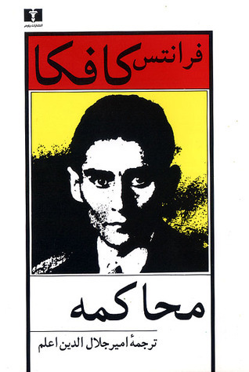
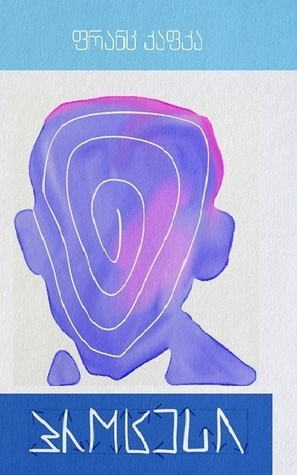
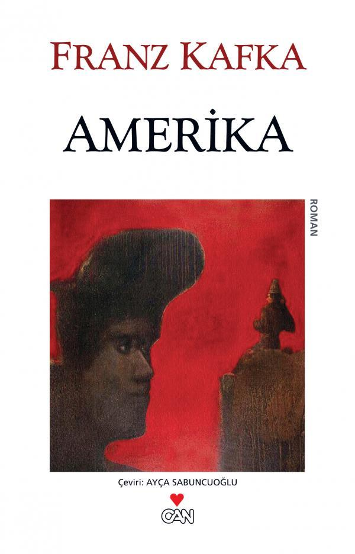

„Jakie to dziwne, że kiedy ktoś budzi się rano, na ogół odnajduje rzeczy na tym samym miejscu,
na którym znajdowały się wieczorem. A przecież, kiedy ten ktoś spał, w swoich snach znajdował
się przynajmniej na pozór w stanie zasadniczo odmiennym od stanu czuwania i trzeba niezwykłej
przytomności umysłu, czy raczej gotowości, by znaleźć wszystko, kiedy się otwiera oczy, by tak
rzecz, na dawnym miejscu, na tym, na którym pozostawiło się je poprzedniego wieczora”. Te zdania,
będące zasadniczym akordem Procesu, Kafka wykreślił. Zdania były umieszczone w scenie
wstępnej, kiedy Józef K. zaczyna rozmawiać ze strażnikami.


Zamek
Na pierwszym planie widać drewniany most zasypany śniegiem. W mgławicy gęstej mgły. K. podnosi
wzrok i wpatruje się w górę, “w coś, co na pozór było pustką”, in die scheinbare Leere.
Dosłownie: “w stronę pozornej pustki”. K. wie, że w tej pustce jednak coś istnieje: że tam jest
Zamek. Nigdy go wcześniej nie widział, może nigdy nie przekroczy jego progu.
Kafka wyczuł, że należy wyliczać jak najmniej elementów otaczającego świata. Doskonała brzytwa
Ockhama zatopiła się w powieściową materię. Należy wyliczać tych elementów jak najmniej i odnosić
się do nich dosłownie. Czym to tłumaczyć? Tym, że świat stawał się na nowo pradawną puszczą, zanadto
przepełnioną nieznanymi odgłosami i zjawami. Że wszystko w nim jest zbyt silne. Dlatego trzeba
ograniczyć się do tego, co najbliższe, i wytyczyć zasięg tego, co można nazwać. Wtedy ze świata
wyłoni się cała jego rozproszona siła. A w tym, co zostanie obdarzone nazwą – nazwą zajazdu,
podania, urzędu, pokoju – skupi się niesłychana energia.
Zaginiony (Ameryka)
Karl Rossmann jest małym bohaterem rodem z bajek, którego rzucono w wielki świat.
Rzeczowy, uparty, gotów na wszystko, wszystkiego ciekaw i silny. Napotyka potwory,
wiedźmy, innych chłopców i dziewczęta, policjantów i włóczęgów – ze wszystkimi
rozmawia jak dorosły, z powagą i znajomością rzeczy. Wcześniejszy wyrok, który
wydalił go z ojczyzny i oddzielił od rodziny, nie wyrządził mu krzywdy i nie
zabarwił ciemnymi kolorami świata, który w Ameryce ukazuje mu się jako przestrzeń
niezwykle rozległa i olbrzymia. „Taka wysoka!”, myśli Karl o statui bogini wolności,
kiedy statek coraz wolniej przesuwa się przed nią. Nie dziwi się, że statua trzyma
w ręku miecz, a nie pochodnię. Karl tylko obserwuje i wciąż zauważa coś nowego.

Opowiadania
"Kafka należy do osobliwego typu pisarzy, których wysiłek skupia się na formułowaniu i
komplikowaniu problemu, a nie na jego rozwiązaniu. Wszystkie jego dzieła reprodukują (…)
w przeróżnych odmianach jednakową sytuację zasadniczą, ich fabuła, zresztą bardzo nikła
(…) krąży w miejscu i stale porwaca do punktu wyjścia - jej treścią są bowiem niekończące
się rozważania ludzi (…), jak osiągnąć cel dla człowieka nieosiągalny". Tak pisał Roman
Karst w przedmowie do wydania nowel i miniatur Kafki z 1961 roku.
Aforyzmy
Aforyzmy pozbawione są wszelkiego nadmiaru, wszelkiej przypadkowości, wszelkiej
natarczywości. Ich zdania w swojej oschłości i mylącej przejrzystości brzmią
jak ultimatum. Nie można spodziewać się po nich obszerniejszych wyjaśnień albo
powiązań między sobą. Są jak szybkie dotknięcia pędzla wprawnego mistrza, który
koncentruje się wyłącznie na tych drobnych ruchach ręki prowadzonych przez „oko
upraszczające do całkowitego ogołocenia”. Tymi słowami Kafka określił swoje spojrzenie
w jednym z listów z tego okresu.
Varia
W czerwcu 1913 roku Kafka zanotował w Dziennikach: „Niezmierny świat, jaki
noszę w głowie. Ale jak oswobodzić siebie i jak oswobodzić ten świat bez rozdarcia?
Chociaż tysiąc razy lepsze jest rozdarcie niż więzienie tego świata lub pogrzebanie
razem z sobą. Po to przecież żyję, jest to dla mnie całkiem jasne”. Ale co tu należy
rozedrzeć? Myślenie czy fantazjowanie? A może jedno i drugie? Należy działać rozważnie,
żeby fantazjowanie wyłaniające się z myślenia nie raniły – lub nie zostały okaleczone.
W każdym razie takie uwolnienie się zawsze musiało być dwojakie: uwolnienie samego
fantazjowania i uwolnienie samego siebie od niego.
Biografia
Pochodzenie i rodzina
Kafka urodził się w Pradze należącej wówczas do monarchii austro-węgierskiej.
Był synem Hermanna Kafki (1852-1931) i Julii Kafki, z domu Löwy (1856-1934).
Pochodzący z prowincji ojciec prowadził sklep galanteryjny. Matka wywodziła
się z bogatej rodziny osiadłej w Podiebradach. Oprócz dwóch braci, Georga i
Heinricha, którzy zmarli niedługo po narodzinach, Franz Kafka miał jeszcze trzy
siostry: Gabrielę znaną jako „Elli” (1889-1942), Walerię – „Valli” (1890-1942) i
Ottilię – „Ottla” (1892-1943). Gabriela i Waleria wraz z rodzinami zostały wywiezione
w październiku 1941 do łódzkiego getta (wówczas Litzmannstadt), skąd zostały wywiezione
we wrześniu 1942 do ośrodka zagłady w Chełmnie nad Nerem (Kulmhof am Nehr) i tam zginęły.
Jego językiem ojczystym był niemiecki, którym w Pradze posługiwało się w tamtym okresie
10% ludności. Kafkowie byli Żydami, jednakże Franz Kafka, jak i zresztą pozostali członkowie
rodziny, mówił i pisał prawie wyłącznie po niemiecku. Znał również bardzo dobrze język czeski,
a języka hebrajskiego zaczął się uczyć dopiero pod koniec życia.
Dzieciństwo i okres młodzieńczy
W okresie od 1889 do 1893 Kafka uczęszczał do niemieckiej szkoły ludowej przy Fleischmarkt
(obecnie ulica Masná) w Pradze. Dalej kształcił się w humanistycznym Altstädter Gymnasium
(Gimnazjum Staromiejskim) w Pałacu Kinskich, gdzie językiem wykładowym był język niemiecki.
Już w wieku młodzieńczym Kafka zajmował się literaturą (jego wczesne dzieła uznaje się za
zaginione, prawdopodobnie sam je zniszczył) oraz ideami socjalizmu i darwinizmu. Pozostawał
pod wpływem literackiego pisma „Der Kunstwart”. Jego przyjaciółmi z tamtego okresu byli między
innymi: pochodzący z Warszawy żydowski aktor teatralny Rudolf Illowy, Hugo Bergmann (późniejszy
rektor Uniwersytetu Jerozolimskiego), Ewald Felix Pribram i Oskar Pollak. Wakacje spędzał chętnie
u swojego wuja Zygfryda będącego lekarzem wiejskim w Třešti.
Studia i praca
W sierpniu 1901 podjął studia na Niemieckim Uniwersytecie w Pradze. Po dwutygodniowej
przygodzie z chemią Kafka postanowił studiować prawo. Pomimo to potrafił wygospodarować
czas, by przez semestr uczęszczać na wykłady z historii kultury i germanistyki. W międzyczasie
odbył kilka podróży i chwilowo zastanawiał się nad studiami germanistycznymi w Monachium.
Porzucił jednak ten zamysł, kontynuując studia prawnicze w Pradze. W 1906 r. został wypromowany
na doktora nauk prawnych, po czym odbył staż w sądzie ziemskim i karnym.
W 1902 poznał swojego najlepszego przyjaciela, dobrze wówczas znanego w praskim środowisku
literackim pisarza, Maxa Broda. Wokół Maxa Broda istniała grupa kilku zaprzyjaźnionych pisarzy,
których wspólnym mianownikiem było żydowskie i jednocześnie praskie pochodzenie. Oprócz Kafki,
do kręgu tego należeli też Felix Weltsch i Oskar Baum.
Od 1908 do 1922 Kafka pracował w Zakładzie Ubezpieczeń Robotników od Wypadków Królestwa Czeskiego
w Pradze, instytucji będącej kombinacją zakładu ubezpieczeń społecznych i inspekcji pracy. W ramach
swoich obowiązków służbowych Kafka podróżował często po całych Czechach nadzorując warunki pracy w
dziesiątkach zakładów przemysłowych. Wbrew temu, co sam pisał w swoich dziennikach, analiza opisów
jego dokonań zawodowych robiona przez przełożonych wskazuje na to, że był on cenionym i sumiennym
pracownikiem. Wskazuje też na to jego częste awansowanie. W momencie gdy musiał zrezygnować z pracy,
piastował dobrze opłacane stanowisko nadinspektora.
Oprócz tego, szwagier i ojciec Kafki wciągnęli go do współzarządzania fabryką azbestu pod Pragą,
której sukces miał, w zamyśle ojca Kafki, stanowić przepustkę do elitarnego kręgu czeskich rodzin
fabrykanckich. Inwestycja ta jednak skończyła się ostatecznie bankructwem.
Franz Kafka, według ówczesnych standardów, był raczej osobą dość zamożną. Jego zarobki
wystarczały mu na prowadzenie w miarę dostatniego życia, typowego dla przedstawiciela praskiej,
wyższej-średniej klasy. Między innymi stać go było na liczne podróże po Europie. Kilkanaście razy
był w Berlinie i Wiedniu, kilka razy w Paryżu, raz we Włoszech.
Franz Kafka, wbrew rozpowszechnionym stereotypom, był dość znany w środowisku praskich,
niemieckojęzycznych głównie pochodzenia żydowskiego, elit intelektualnych. Był stałym członkiem
kilku praskich salonów literackich, gdzie czytywał swoje opowiadania i uczestniczył w dyskusjach.
Publikował w „Prager Tagblatt” i później w „Berliner Tageblatt” recenzje sztuk teatralnych i dzieł
literackich.
W 1909 zostały wydane jego pierwsze szkice prozy w monachijskim czasopiśmie literackim „Hyperion”.